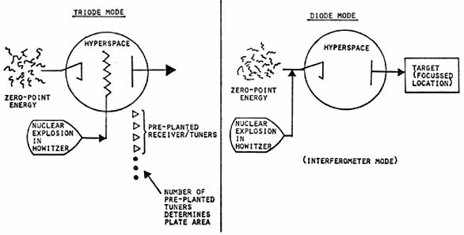

|
177. Scalar energy tap: refers to a Soviet method of obtaining tremendous electromagnetic energy from the molten core of the earth, with which to power gigantic strategic scalar Tesla howitzers. As measured by Golden, two signals are continually transmitted into the earth some 12 kiloHertz apart, and the earth itself is placed in scalar resonance to the two frequencies. The core of the earth, being a pumped phase conjugate mirror, responds by generating highly amplified phase conjugate replicas, which return and concentrate all their energy at the transmitter/receivers. The receivers receive the enormous beat frequency (12 kHz) energy, using it for power. One then has a kind of scalar interferometer channel in the earth's core in the endothermic mode. Depending upon the biasing, either ordinary EM energy or negative EM energy is captured in the 12 kiloHertz band by the interferometer receivers. Varying the negative biasing also provides a throttle to control the amount of energy extracted. Just before the May 1, 1985 celebration, the Soviets activated some 27 such giant energy taps in the earth, and also activated a large number of command and control scalar transmission frequencies. If each tap can power 6 to 8 giant Tesla howitzers, then for their important 40th anniversary of WWII, the Soviet Union activated well over 100 large howitzers. In other words, a massive exercise of the Soviet Union's entire strategic scalar howitzer weapon complex was held on the 40th anniversary of 1945 for Gorbachev, and to signify meeting the schedule (laid down by Brezhnev in 1972) to "be ready" to use them. At the conclusion of the exercise (which lasted several days), the Soviets left two scalar energy taps in place, instead of the single one present before the exercise. In other words, additional strategic weapons were brought up on "ready alert." |

